Guns Horses & Ships is a multiplayer survival game set in the 18th century. You play as a settler in a vast wilderness where you'll gather resources, find food, craft tools, and build a settlement to survive. A controls tutorial appears when you first spawn explaining the basics.
Move using the WASD keys. Double-tap W to toggle auto-run for continuous forward movement - tap W again to stop. Rotate the camera by clicking and dragging left/right, and drag up/down to adjust the overhead angle. Scroll to zoom in or out. On-screen buttons for zoom and rotate are also available. A compass in the corner shows your facing direction - north is toward positive Z (Northmen territory). When you're near something you can interact with, buttons will appear at the top of your screen. Press Enter to open the chat, type your message, and press Enter again to send. Press Escape to close chat without sending. Chat is local - only players near you will see your messages.
When you first join, you can create an account or play as a guest. Guests can explore and learn the game, but your progress won't be saved between sessions. With an account, you can set a home spawn point by building a tent or house. Your personal inventory is lost when you die, but anything stored in tents or houses persists.
Tutorial
A task list in the corner of your screen guides you through the basics. Complete tasks to earn coins and learn the game's systems. Your first priorities should be finding food and gathering vines from grass patches to craft rope, which you'll need for tools and fishing.
Settings
Click the Settings button to access game options. A volume slider controls the master audio level. Debug Info toggle shows technical details like your exact position, speed, region coordinates, and food timer. These preferences are saved between sessions.
Graphics Quality
Before spawning, you can select a graphics quality preset: HIGH, MEDIUM, or LOW. High quality includes full water effects, fog, and terrain detail. Medium reduces some effects for better performance. Low uses simplified graphics for older hardware. Your choice is saved between sessions.
Inventory
Click the Backpack button to open your inventory. Drag items to rearrange them. While dragging an item, scroll the mouse wheel to rotate it between horizontal and vertical orientations - this helps fit more items. To discard an item, drag it outside the inventory panel. When transferring coins between your backpack and storage, a dialog lets you choose how many to move rather than transferring the entire stack. Double-click an item to bulk transfer all items of that type between your backpack and an open structure or crate.
Game Progression
The game offers two distinct paths: join a faction and engage in territorial warfare, or stay neutral and focus on peaceful survival. Here's how the game typically progresses for each path.
Early Game: Survival
Your first priority is not starving. Find apple trees for immediate food, forage mushrooms from grass, and gather vegetables you spot in the world. Collect vines from grass patches to craft rope, which you'll need for fishing nets and tools. Once you have basic food sources, focus on gathering limestone and wood to build your first structures.
Building a Settlement
Build a tent first - it gives you storage and a respawn point. Gather materials to build a house, which provides better storage and lets you cook food. Place crates near resource areas for convenient storage while gathering. As your settlement grows, add worker structures like woodcutters and miners that automatically harvest and sell to your market.
Establishing Trade
Build a market to enable buying and selling. Stock it by selling gathered resources. Build a dock on the shoreline near your market to attract merchant ships. Ships arrive every 30 minutes and will trade with any market within 20 units of your dock - they buy raw materials and sell tools, weapons, and horses.
Pursuing Quality
Resource quality varies by location - explore to find areas with higher quality trees, rocks, and food. Quality affects how long tools last and how much food sustains you. The center of continents tends to have better quality resources than coastal areas. Higher quality items also fetch better prices at markets.
The Faction Path: Earning Influence
If you've joined a faction (Southguard or Northmen), you can earn influence by stocking your market with 100% quality materials. When merchant ships take these items, you gain 1 influence per item. Influence is the currency for building your faction's military power.
Securing Territory with Militia
Spend influence to spawn militia at structures you own. Tent militia patrol and chase enemies. Outpost militia stand guard in elevated towers with better range and accuracy. Artillery militia man cannons and automatically fire at threats within 28 units. Use militia to defend your settlement and secure territory for your faction.
Faction Warfare
Seek out enemy faction settlements to raid. Enemy markets can be looted for free - no coins required. Use artillery to destroy enemy structures from a safe distance. Coordinate with fellow faction members (identifiable by their shirt color) to mount larger attacks. Destroying enemy tents removes their respawn points; destroying their markets cripples their economy.
The Neutral Path
Alternatively, stay neutral and avoid the chaos of faction warfare. Neutral players can build anywhere without being targeted by militia. Focus on perfecting your settlement, exploring the vast world, hunting and fishing, or simply enjoying a peaceful life in the wilderness. You won't earn influence or spawn militia, but you also won't be drawn into territorial conflicts. This path suits players who prefer building and survival over combat.
Survival
Hunger
Your hunger drains continuously while playing. Food in your backpack is consumed automatically - you don't need to click anything. The status bar on the right side of your screen shows how many minutes until you start starving.
Food Sources
Food can be found in several ways. Apples grow on apple trees - walk up to a tree and open its inventory. When you stop on grass, there's a 5% chance a mushroom appears to gather, a 2.5% chance for vegetable seeds, a 2.5% chance for hemp seeds, and a 10% chance for limestone. Vegetables are visible in the world and can be gathered by walking up to them. You can also find vegetable seeds and plant them from the build menu. Fish must be cooked before eating - raw fish cannot be consumed.
Food
Duration (100% quality)
How to Obtain
Apple
10 minutes
Apple trees
Mushroom
10 minutes
Foraging on grass
Vegetables
20 minutes
Gathering or planting
Roasted Vegetables
40 minutes
Cook vegetables
Apple Tart
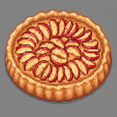
30 minutes
Buy from market
Cooked Fish
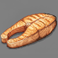
60 minutes
Cook raw fish
Cooked Meat
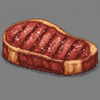
80 minutes
Cook raw meat
Raw Fish
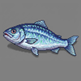
Cannot eat
Fishing
Raw Meat
Cannot eat
Hunting
Duration scales with quality. A 50% quality apple lasts 5 minutes instead of 10.
Variety Bonus
Carrying different types of food slows your hunger. Each unique food type gives a 10% bonus, up to 40% with four different types. For example, carrying apples, cooked fish, roasted vegetables, and mushrooms together will make your food last nearly twice as long as carrying just one type.
Cooking
Raw fish and vegetables can be cooked at campfires or houses. Place the raw food and some firewood in the structure's inventory, and after one minute the food will be cooked. Cooked food lasts much longer - cooked meat provides 80 minutes of sustenance compared to raw food which cannot be eaten at all. Structures with firewood emit visible smoke, making active cooking spots easy to spot from a distance.
Starvation
When you run out of food, you begin starving. A warning appears showing how long until you die. If you starve for six minutes without finding food, you die. While starving, you accumulate hunger debt - any food you pick up must first pay off this debt before providing sustenance. You can't survive by briefly grabbing food and dropping it.
Hunting
Deer and bears roam the wilderness. Deer are passive and will flee if you get too close or fire a shot nearby. Bears are extremely dangerous - they spawn from bear dens and will aggressively chase you if you enter their territory. Bears attack in melee range and are fast, so keep your distance and use a rifle.
Fishing
To fish, craft a fishing net from 2 rope and stand in shallow water or aboard a boat. Each cast takes 10 seconds and uses 1 net durability. Your catch chance equals your net's quality as a percentage (minimum 25%) - a quality 50 net catches fish 50% of the time, while a quality 100 net never fails.
Meat
Killing a deer or bear drops raw meat. Get close to the corpse and interact with it to collect the meat before the body despawns after about two minutes. Raw meat cannot be eaten - you must cook it at a campfire or house with firewood. Cooked meat provides 80 minutes of sustenance, making it the most nutritious food in the game.
Food Quality
All food has a quality rating that affects how long it lasts. Higher quality food provides more minutes of sustenance. Different regions of the world have different resource qualities - exploring further from where you started may lead you to better or worse quality food sources.
Resources
Trees and Logs
Pine 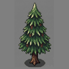 and apple trees grow throughout the wilderness. Chop down a tree with an axe and it drops a log. Each log can be harvested five times, giving you either firewood (using an axe) or planks (using a saw ). Firewood is used for cooking, while planks are used for building.
Resource
Tool
Products
Pine Tree
Axe
Pine Plank , Pine Firewood
Apple Tree
Axe
Apple Plank , Apple Firewood
Stone
Four types of stone can be mined with a pickaxe : limestone, sandstone, clay, and iron. Limestone and sandstone are common building materials - structures built with sandstone have a warmer color tint compared to grey limestone. Clay can be processed into tiles - it takes one minute at a tileworks or five minutes at a campfire. Iron is rare and only found in high mountains - it must be smelted into ingots at an ironworks before use.
Stone
Location
Processed Form
Limestone
Common, all elevations
Chiseled Limestone 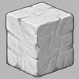
Sandstone
Common, all elevations
Chiseled Sandstone
Clay
Common, lower areas
Tile
Iron
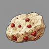
Rare, mountains only
Iron Ingot
Hemp
Hemp grows naturally at low elevations (height 3-10) and can also be planted from hemp seeds. Walk up to a hemp plant and click the Gather Hemp button - gathering takes 6 seconds and produces hemp fiber. Two hemp fibers can be combined in your inventory to craft fabric, a material used in construction. Hemp seeds can be found while foraging on grass (2.5% chance) or gathered from mature hemp plants (40% chance).
Harvesting
Most harvesting actions take 10 seconds. Walk up to a resource and a button will appear at the top of your screen. Each harvest uses one point of your tool's durability. When durability reaches zero, the tool breaks. Higher quality tools last longer - a quality 50 axe can chop 50 times before breaking.
Quality
All resources have a quality rating from 1 to 100. Quality affects how long food lasts, how many uses you get from a tool, and how much an item sells for. Different regions of the world have different quality ranges. You can pay a trapper NPC to reveal the quality of resources in your area.
Seed Planting
Seeds let you grow new trees, vegetables, and hemp. When gathering resources on grass, there's a small chance (about 2.5%) to find seeds. You can also sometimes gather seeds directly from parent plants - apple seeds from apple trees, pine seeds from pine trees, vegetable seeds from vegetable patches, and hemp seeds from hemp plants.
To plant a seed, open the Build menu and select the seed type. Place it on valid terrain like you would any other structure. Vegetable seeds grow into harvestable vegetables. Hemp seeds grow into hemp plants that yield hemp fiber. Apple seeds grow into apple trees that produce fruit. Pine seeds grow into pine trees that can be chopped for wood. Planted resources inherit the quality of the region where they're planted.
Building
Construction
Click the Build button at the top of your screen to open the build menu. Select a structure and click to place it. While placing, use Q and E keys to rotate the structure, or scroll the mouse wheel. Simple structures like tents, campfires, crates, carts, walls, roads, and boats build instantly when you have the materials. Larger structures like houses, markets, and worker buildings require placing a construction site first, then gathering materials and using a hammer to complete the build.
Structures
Tents and houses store your items and serve as respawn points. You can only have one spawn point at a time - building a new tent or house makes it your new home, replacing any previous spawn point. Tents are shared - any player can open them. Houses are private - only the owner can access the inventory. Campfires cook food using firewood. Markets enable trading when paired with a dock , which must be placed on a shoreline with deep water ahead. Warehouses store up to 4 crates inside a single building - only the owner can load and unload crates. Worker buildings like bakeries, woodcutters, and miners can be sold to NPC proprietors who will run them automatically.
Structure
Purpose
Build Type
Tent
Storage, respawn point
Instant
House
Storage, respawn, cooking
Construction site
Campfire
Cooking food
Instant
Crate
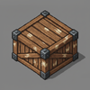
Portable storage (100 slots)
Instant
Market
Trading hub
Construction site
Dock
Ship trading
Construction site
Wall
Defense
Instant
Road
1.5x movement speed
Instant
Outpost
Lookout tower
Instant
Warehouse
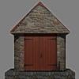
Crate storage (up to 4)
Construction site
Structure Inventories
Some structures have restricted inventories that only accept specific items. This prevents accidentally storing random items in processing structures.
Structure
Accepts Only
Apple Tree
Nothing (read-only, apples spawn naturally)
Ironworks
Iron ore, iron ingots, firewood
Blacksmith
Iron ingots, parts, firewood
Bakery
Apples, apple tarts, firewood
Tileworks
Clay, tiles, firewood
Fisherman
Fish, cooked fish, firewood
Artillery
Shells only
Decay
All structures decay over time based on the quality of materials used to build them. Higher quality materials make structures last dramatically longer. However, some structure types have a quality cap that limits their maximum lifespan regardless of material quality.
For uncapped structures, lifespan scales with quality: quality 15 lasts about 2 days, quality 50 lasts about 11 days, and quality 100 lasts about 30 days. Construction sites expire after 1 hour if not completed. Worker structures sold to a proprietor stop decaying entirely.
When a structure has less than 1 hour of durability remaining, it begins smoking and emitting a fire sound as a visual and audio warning. You can check any structure's current durability by approaching it - the info panel shows durability, percentage remaining, and hours until it becomes a ruin.
Ruins and Item Loss
When a structure reaches zero durability, it becomes a ruin. Any items stored inside are permanently lost - this includes the contents of tents, houses, crates, and artillery shell storage. Militia assigned to the structure are also removed. Ruins persist for about an hour, during which you can rebuild in the same spot. After an hour, ruins disappear automatically.
Repair
Structures can be repaired before they fully decay. Stand near a structure and click the Repair button. You must have the structure's original build materials in your backpack. Repairing resets the decay timer completely and updates the structure's quality to a weighted average of its current quality and the quality of your repair materials. For example, repairing a quality 30 structure with two quality 90 materials results in a new quality of about 70. Quality caps still apply - repairing a tent with quality 100 materials will still cap it at quality 15.
Combat Damage
Artillery hits deal 50 durability damage to structures per shot, which can rapidly destroy them. A low-quality structure can be destroyed in a single hit. Each shot fired also wears the artillery itself by 1 durability. Rifles and other player weapons do not damage structures.
When an enemy faction player loots items from your market, the market's remaining lifespan is reduced to 15 minutes if it currently has more time remaining. This forces you to repair or lose the market quickly after a raid.
Materials
Most structures require planks, chiseled stone, or tiles. Planks come from processing logs with a saw. Chiseled stone is made by using a chisel on raw limestone or sandstone. Tiles are made by cooking clay with firewood at a tileworks or campfire. Some structures also require fabric, which is crafted by combining two hemp fibers in your inventory.
Crafting
Combining Items
Open your backpack and drag one item onto another to combine them. Combining takes 6 seconds and you must stand still.
Result
Recipe
Time
Rope
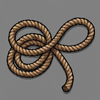
2 Vines
6 sec
Fishing Net
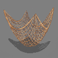
2 Rope
6 sec
Improvised Tool
Limestone + Rope
6 sec
Fabric
2 Hemp Fiber
6 sec
Chiseling
To make chiseled stone, you need a chisel . Select the chisel in your inventory, then click on stone. Chiseling takes 6 seconds and uses one point of your chisel's durability.
Result
Input
Time
Chiseled Limestone
Limestone
6 sec
Chiseled Sandstone
Sandstone
6 sec
Tool Quality
When you craft a tool, its quality is the average of the materials used. Higher quality tools last longer before breaking. All crafted tools have a minimum quality of 25, so even low-quality materials will produce a usable tool.
Combat
Rifles
Combat happens automatically when enemies are nearby. If you have a rifle with ammo 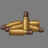, you'll shoot every 6 seconds. Each shot uses one ammo and one rifle durability. When durability reaches zero, the rifle breaks. Your shooting range is normally 10 units but can extend to 15 if you have height advantage over your target. Ammo stacks up to 20 per slot - when transferring from storage, it automatically fills existing stacks first.
Your backpack has a dedicated rifle sling slot in the header. Drag a rifle there to free up inventory space while keeping it equipped. Only rifles can be placed in the sling slot.
A Hold Fire button appears in the combat display when you have a rifle. Click it to pause automatic shooting - useful when you want to avoid alerting nearby enemies or wasting ammo. Click again to resume firing. You can also collapse the combat stats display to reduce screen clutter while keeping the hold fire toggle visible.
When enemies are nearby, a red glow appears at the edge of the screen in their direction. This helps you locate threats before they surprise you.
Accuracy
Your base hit chance is 35% and can reach 80% maximum. Standing higher than your target gives 15% bonus per unit of height - this is the biggest accuracy factor. Getting very close (under 4 units) also dramatically improves accuracy. Rifle quality provides a small bonus: quality 100 adds 10%, quality 50 is neutral, quality 1 subtracts 10%.
Outpost Climbing
Outposts provide elevated shooting positions. When near an outpost, a Climb button appears at the top of your screen. While at the top, you can aim and shoot but cannot move - the height advantage significantly improves your accuracy and range. Click Climb Down to descend. Only one person can occupy an outpost at a time. If you've recruited outpost militia, they occupy the tower instead.
Bandits
Bandits spawn from tents scattered throughout the wilderness. They detect you at 30 units and will chase and shoot. Destroying a bandit's tent prevents them from respawning. Killed bandits leave lootable corpses containing coins, ammo, and sometimes other items. Bandit tents also contain loot - interact with the tent to access its inventory.
Bears
Brown bears spawn from bear dens and are extremely dangerous. They attack in melee range and move fast. Keep your distance and use a rifle - if a bear reaches you, it will maul you quickly. Bears flee from structures, so buildings offer some protection.
Death and Corpses
When you die, your body remains as a lootable corpse for about 1 hour. Other players can open your corpse to take your inventory, including any rifle in your sling slot. Your structures remain - anything stored in tents or houses is safe. Killed bandits and militia also leave lootable corpses containing coins, ammo, and sometimes other items. After a short countdown, you can choose how to respawn:
Spawn Option
Location
Inventory
Resume Last Session
Where you last played
Restored (requires Save and Exit)
Random Spawn
Random in your faction territory
Starter items (food, basic gear)
Home
Near your tent or house
Empty
Near Friend
Near an online friend
Empty
Resume Last Session is only available for registered players who used Save and Exit (in Settings) before closing the game. This is the only way to preserve your inventory between sessions - closing the browser without saving loses everything you're carrying. Dying also clears your saved session.
Spawn Protection
After respawning, you have 2 minutes of protection from bandits and bears. A "Protected: Xs" counter appears in your status bar showing how many seconds remain. During this time, enemies will not attack you, giving you a chance to get your bearings and find safety.
Friends
Open the Friends panel from the Settings menu to manage your friends list. Type a player's username and click Add to send a friend request. When you receive a request, you can accept or decline it. Accepted friends appear in your list with a green dot if they're online or grey if offline. After dying, you can choose to respawn near an online friend instead of at home or a random location.
Artillery
Artillery 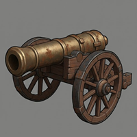 is a powerful cannon that can be towed by horses. To load it, click the artillery button and place shells 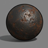 inside its inventory. To fire, click the man artillery button to take position behind the cannon. Use A and D to rotate, then press F to fire. Artillery has a 28-unit range and 12-second cooldown between shots. It can destroy enemy faction structures and bandit camps.
Militia
Militia are AI defenders you can recruit to protect your structures. Approach a tent, outpost, or artillery you own and click the Request Militia button. Recruiting costs 1 influence and requires faction membership - guests cannot recruit militia.
Three types of militia are available:
Type
Structure
Behavior
Tent Militia
Tent
Patrols near tent, attacks enemies on foot
Outpost Militia
Outpost
Elevated shooter stationed in the tower
Artillery Gunner
Artillery
Automatically fires the cannon at enemies
Militia attack enemy faction players, bandits, and bears within range. They are more effective than bandits - militia have 45% base accuracy (vs 35% for bandits), longer range (15-20 units vs 10-15), and faster fire rate (every 4 seconds vs 6). When a militia is killed, it does not respawn - you must spend another influence to recruit a replacement. Militia persist across sessions as long as their structure exists.
Influence
Influence is a currency earned through high-quality trade. When trade ships collect 100-quality items from your market, you earn 1 influence per item collected. Only faction players can earn and spend influence - guests cannot participate in the militia system. Your influence total is shown in the upper right of the market interface for markets you own.
Trading
Markets
Build a market to create a trading hub. Markets start empty - you must stock them by selling items to them, or set up automated production with worker NPCs. Open a market's inventory to buy and sell. To quickly buy or sell many of the same item, click the Buy or Sell button once, then press Enter repeatedly to confirm and continue the transaction.
Pricing
Market prices are calculated from three factors: base price, supply level, and item condition. Low stock increases prices by up to 50%, while overstocked items drop to 10% of base value. Quality scales linearly - a quality 100 item sells for full price, quality 50 for half. For tools and weapons, the price uses the average of quality and durability, so a worn tool sells for less even if it started high quality.
Enemy faction markets can be looted for free - the buy button changes to "Loot" and all items cost 0 coins. This makes raiding enemy territory profitable even without destroying anything. You can sell items to enemy markets normally.
Stocking Your Market
Stock a market by selling items to it - this adds them to the market's inventory and gives you coins . You can also build worker structures nearby and sell them to proprietors. When you sell a structure like a woodcutter or miner to a proprietor, you receive 10 coins and a worker NPC spawns to gather resources and sell them to your market automatically. Once sold, the structure stops decaying but you lose access to its inventory.
Worker Structures
Nine structure types can be sold to proprietors: bakery, woodcutter, gardener, miner, stonemason, blacksmith, ironworks, tileworks, and fisherman. Each produces different goods - woodcutters deliver planks and firewood, miners deliver stone, bakers convert apples to tarts. Build these near your market, then click the Seek Proprietor button to sell them.
Docks and Ship Trading
Build a dock on a shoreline and place a market within 20 units. Trade ships arrive periodically and automatically trade with your market. Ships buy your materials (stone, planks, firewood, rope) leaving only 10 of each type behind. Ships also restock tools, weapons, and horses at fixed prices - 60 coins for tools, 200 for rifles and horses. The quality of delivered tools depends on your market's region, the same as local resources - a market in a high-quality area receives better tools. All ship-delivered tools have a minimum quality of 25.
Pausing Shipments
Use the pause shipments button in the market interface to control ship trading. Allow shipments if you want cheap tools and weapons - the increased supply lowers prices. Pause shipments if you want to keep your materials for building or crafting.
NPCs
Wildlife
Deer and bears roam the wilderness and can be hunted for meat. Deer spawn from special trees and are passive - they flee when you approach within 10 units, hear gunshots within 50 units, or see man-made structures within 10 units. If a deer spots a bear, it flees at 25 units. When killed, a deer corpse remains for about 2 minutes before despawning - interact with it quickly to collect raw meat. After harvesting a deer, that tree won't spawn another for about an hour.
Brown bears spawn from bear dens and are extremely aggressive. They chase anything that moves - players, bandits, even deer. Bears move at 2.75 units per second, faster than you can run, and their melee attacks are nearly instant kills. However, bears will flee from buildings and structures, so staying near your settlement offers protection. Killed bears don't respawn until all players leave the area and the chunk unloads. To permanently clear the area, destroy the bear den.
Bandits
Bandits live in camps scattered throughout the world, typically with 1-3 tents and sometimes an outpost. They spawn when you get within 50 units of their tent and will chase you up to 30 units from home. Bandits carry rifles and shoot every 6 seconds with the same accuracy rules as players - about 35% base chance, up to 80% with height advantage.
Bandits return to their tent if you retreat beyond 30 units. If you kill a bandit, they respawn after 2 minutes as long as their structure stands. Both tents and outposts spawn bandits - to clear a camp permanently, destroy all tents and outposts. Killed bandits leave lootable corpses on the ground containing coins, ammo, and sometimes tools - walk up and interact to loot them. Corpses last about 1 hour before disappearing. Bandit tents also contain loot you can access. Artillery can destroy bandit camps from a safe distance.
Workers
Nine types of worker NPCs can run your structures automatically. Build a worker structure near your market (within 20 units), then click the Seek Proprietor button. You'll receive 10 coins and lose control of the structure, but a worker spawns who gathers resources and sells them to your market. The structure stops decaying once sold. You can talk to any worker NPC - a Talk button appears when you're nearby, and they'll explain what they do.
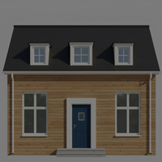 Woodcutter - Finds pine trees within 50 units, chops them down, and processes each log into firewood and planks. Delivers materials to your market.
Miner - Searches for rocks within 50 units and mines them 5 times per rock. Delivers raw stone to your market - limestone, sandstone, clay, or iron depending on what's nearby.
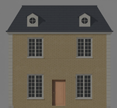 Gardener - Plants up to 23 vegetables in rows, waits 30 minutes for harvest, then collects and sells them. During downtime, gardeners plant trees nearby (mostly pine, some apple).
Baker - Collects apples from nearby gardens, brings them to the bakery, and bakes them into apple tarts. Apple tarts sell well and provide 30 minutes of food each.
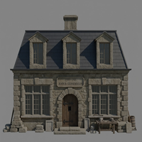 Stonemason - Collects raw stone from your market, chisels it (6 seconds per piece), and sells the chiseled stone back. Turns your miners' output into building materials.
Fisherman - Walks to nearby water, catches 8 fish, returns to cook them with firewood, and sells cooked fish to your market. Cooked fish provides 60 minutes of food.
Ironworker - Collects iron ore and firewood from your market, smelts the iron into ingots at the ironworks, and sells the ingots. Iron can only be smelted at an ironworks, not a campfire.
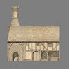 Tileworker - Collects clay and firewood, fires the clay into tiles, and sells them. Tiles are required for building houses and most worker structures.
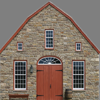 Blacksmith - Collects iron ingots and firewood, forges them into metal parts, and sells the parts. Parts are needed for artillery.
Trappers
Trappers live in tents in forested areas throughout the world - one per region. Walk up to a trapper and for 5 coins, they'll tell you the quality ranges of all resources in that area: trees (pine, apple), rocks (limestone, sandstone, clay, iron), and gatherables (vines, mushrooms, vegetables, hemp, seeds, fish, deer, bears). This helps you find regions with higher quality materials worth the travel.
Merchants
Merchants appear on docks when trade ships visit. They can tell you when the next ship will arrive and explain how dock trading works. Ships arrive approximately every 30 minutes at functioning docks. The merchant stays on the dock between ship visits, providing a visual indicator that your dock is working.
Transportation
Horses
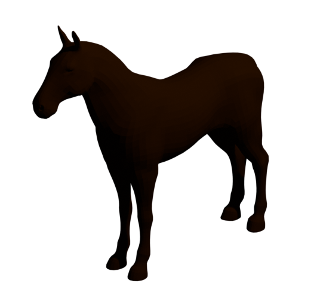 Horses are the fastest way to travel on land. Build one from the build menu using 1 vegetable. Walk within 2 units and click Mount Horse - mounting takes about 1 second. While mounted, you move at 1.75 units per second, 40% faster than walking. Press W to accelerate, A/D to turn. Horses cannot move backward - the S key slows you down instead of reversing.
Roads increase your speed by 50%, bringing horses to about 2.6 units per second. Steep slopes (over 50 degrees) reduce your speed dramatically but won't completely stop you. Dismounting requires relatively flat terrain nearby - you can't jump off on a cliff face.
Horses can tow carts and artillery. Approach what you want to tow while mounted and it attaches automatically. Towing an empty cart reduces your speed by 10%. A cart loaded with a crate reduces speed by 33%. Artillery also reduces speed by 33%. Roads help offset these penalties. Turning while towing is slower (40-50% reduction) and requires forward motion - you cannot spin in place.
Carts
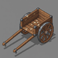 Carts are mobile storage that can be towed by players on foot or by mounted horses. Build one using 1 plank. Carts can hold one crate at a time, providing 100 inventory slots for hauling materials.
Players on foot can tow carts but move slowly - empty carts reduce speed by 10%, loaded carts by 50%. You must move forward to turn while towing. Horses handle carts better: only 33% speed penalty when loaded, compared to 50% on foot. Roads increase your towing speed by 50% whether walking or mounted.
To load a crate onto a cart, approach the crate while near the cart. To unload, the crate drops behind the cart onto valid terrain.
Boats
Three boat types let you cross water. All use WASD controls - W accelerates forward, S reverses, A and D turn. Unlike horses, boats can move backward. Boats drift slowly to a stop rather than braking instantly.
Warning: All water vehicles are destroyed if you die, disconnect, or close the browser while aboard. Unlike horses and carts which remain in the world, boats cannot be safely left in water. Always return to shore and disembark before logging out. The only exception is multi-crew ships - if other crew members are still aboard, the ship persists when one person leaves.
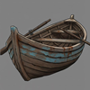 Rowboat - The basic boat moves at 1 unit per second (walking speed). It can operate in shallow water right up to the shore edge. Full rotation takes 12 seconds. Build cost: 1 plank.
Sailboat - Faster at 1.5 units per second. Requires water at least 0.3 units deep, so you'll need to find a slightly deeper spot to board. Turns slower - 16 seconds for full rotation. Build cost: 1 plank.
Ship - The largest vessel at 1.25 units per second. Requires deep water (1.0 units depth) and has the slowest turning at 20 seconds per rotation. Best for crossing open water. Build cost: 1 plank.
Ship Cargo
Large ships can carry cargo for transporting goods and equipment across water. A ship can hold up to 4 crates, 2 artillery pieces, and 3 horses. Approach cargo while piloting the ship to load it aboard. Cargo is positioned on the deck and travels with you. To unload, you must be near a dock or shallow water.
Ship Crew Positions
Large ships have multiple crew positions for naval combat. The pilot controls movement from the helm using WASD. Two cannon positions are available - port (left side) and starboard (right side). While piloting, buttons appear to man either cannon. Gunners can fire the ship's cannons, switch to the other cannon, or return to the helm.
Only faction players can crew a ship together - guests cannot join crews. To have gunners, artillery must be loaded into the ship's cannon slots first. There are no passenger seats - everyone aboard must have a role (pilot or gunner).
Crew coordination is important in combat. Gunners can switch between port and starboard cannons to engage targets on either side. If the pilot leaves or dies, a gunner can take the helm to keep the ship moving. The pilot position can also be passed to another crew member voluntarily.
To exit a boat, you must stop completely near land or a dock. The game checks 8 points around you for valid dismount locations. Docks let you disembark directly onto the platform even when the water below is deep.
Artillery
Artillery can only be towed by horses - players on foot cannot move it. While mounted, approach artillery and it attaches. Towing reduces your speed by 33% with roads providing a 1.5x bonus. Your turn rate drops by 50% when towing artillery.
To operate artillery, you must dismount and click Man Artillery. See the Combat section for firing details. When done, step away and remount your horse to continue moving.
Roads
Roads increase movement speed by 50% for all land transportation - walking, horses, and towing. A horse normally moves at 1.75 units per second but travels at about 2.6 on roads. Even a horse pulling a loaded cart moves faster on roads than an unloaded horse off-road.
Roads are built using 1 chiseled limestone each and never decay. Connecting your settlement to distant resources with roads is one of the best investments you can make.
World
Terrain
The world is procedurally generated with large continents separated by ocean. Continents are roughly circular landmasses about 500 units in radius, spaced approximately 2000 units apart. Between continents lies open ocean with a depth of 30 units below the surface. Beaches form the transition between land and water, with shallow areas near shorelines.
Elevation determines what you'll find. Beaches and low coastal areas (below 7.5 units elevation) have sand and limited resources. Most trees, rocks, and wildlife spawn on elevated land between 7.5 and 22 units high. Higher elevations become rocky with sparser vegetation. Iron ore is most common in mountainous terrain.
Factions
Two factions divide the world: Southguard controls territory south of the equator (negative Z coordinates), while Northmen control the north (positive Z coordinates). When you create an account, you choose a faction and spawn in your faction's territory.
Faction determines your shirt color - maroon for Southguard, dark blue for Northmen. You can set home spawn points anywhere, including enemy territory - useful for forward bases. Structures you build in enemy territory can be attacked by opposing faction members. Artillery is particularly effective for destroying enemy settlements.
A third option is Neutral - you can play without faction allegiance. Neutral players spawn randomly, cannot claim faction territory, and cannot recruit militia. Guests are always neutral.
Changing factions is possible but has serious consequences. If you change factions while in enemy territory, you die immediately, lose all tent, house, and market ownership (they become abandoned), and must wait 24 hours before changing again. However, if you travel to your target faction's territory first and change there, you avoid death and keep your structures. Only change factions if you're certain - there's no way to recover abandoned structures.
Quality Regions
Resource quality varies dramatically across the world. Each region (chunk) has fixed quality ranges for different resources - one area might have excellent pine but poor limestone, while a nearby region has the opposite. Quality ranges from 1 to 100 and affects how long tools last, how much food sustains you, and how much items sell for. Regions also vary in resource density by up to 25% - some areas are richer with more trees and rocks, while others are sparser.
The most important factor is distance from the coast. Resources found deep inland on continent centers can be 20-30 quality points higher than those near beaches. This continent bonus makes exploring toward the interior worthwhile despite the longer travel times.
Trappers scattered throughout the wilderness will reveal quality ranges for 5 coins. Use this information to find regions worth settling. A settlement built near quality 80+ resources will produce dramatically better goods than one stuck with quality 30 materials.
World Size
The world spans 100,000 units in each direction - far more than you could ever explore. The chunk system loads terrain and objects as you travel, with about 21 chunks visible around you at any time. Each chunk is 50 units across.
There are no invisible walls at the world's edge, but the procedural generation ensures you'll always find more ocean and continents in any direction. The world is persistent across sessions - structures you build remain until they decay or are destroyed.
Region Borders
Small dark wooden posts mark the boundaries between regions. Each region has its own resource quality ranges, so crossing a border means the quality of trees, rocks, and other resources may change. Use these markers to keep track of which region you're in while exploring.


 trees grow throughout the wilderness. Chop down a tree with an axe
trees grow throughout the wilderness. Chop down a tree with an axe  and it drops a log. Each log can be harvested five times, giving you either firewood (using an axe) or planks (using a saw
and it drops a log. Each log can be harvested five times, giving you either firewood (using an axe) or planks (using a saw  ). Firewood is used for cooking, while planks are used for building.
). Firewood is used for cooking, while planks are used for building. , Pine Firewood
, Pine Firewood 
 , Apple Firewood
, Apple Firewood 
 : limestone, sandstone, clay, and iron. Limestone and sandstone are common building materials - structures built with sandstone have a warmer color tint compared to grey limestone. Clay can be processed into tiles - it takes one minute at a tileworks or five minutes at a campfire. Iron is rare and only found in high mountains - it must be smelted into ingots at an ironworks before use.
: limestone, sandstone, clay, and iron. Limestone and sandstone are common building materials - structures built with sandstone have a warmer color tint compared to grey limestone. Clay can be processed into tiles - it takes one minute at a tileworks or five minutes at a campfire. Iron is rare and only found in high mountains - it must be smelted into ingots at an ironworks before use.


 to complete the build.
to complete the build. and houses
and houses  store your items and serve as respawn points. You can only have one spawn point at a time - building a new tent or house makes it your new home, replacing any previous spawn point. Tents are shared - any player can open them. Houses are private - only the owner can access the inventory. Campfires
store your items and serve as respawn points. You can only have one spawn point at a time - building a new tent or house makes it your new home, replacing any previous spawn point. Tents are shared - any player can open them. Houses are private - only the owner can access the inventory. Campfires  cook food using firewood. Markets
cook food using firewood. Markets  enable trading when paired with a dock
enable trading when paired with a dock  , which must be placed on a shoreline with deep water ahead. Warehouses store up to 4 crates inside a single building - only the owner can load and unload crates. Worker buildings like bakeries, woodcutters, and miners can be sold to NPC proprietors who will run them automatically.
, which must be placed on a shoreline with deep water ahead. Warehouses store up to 4 crates inside a single building - only the owner can load and unload crates. Worker buildings like bakeries, woodcutters, and miners can be sold to NPC proprietors who will run them automatically.


 . Select the chisel in your inventory, then click on stone. Chiseling takes 6 seconds and uses one point of your chisel's durability.
. Select the chisel in your inventory, then click on stone. Chiseling takes 6 seconds and uses one point of your chisel's durability. with ammo 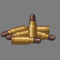, you'll shoot every 6 seconds. Each shot uses one ammo and one rifle durability. When durability reaches zero, the rifle breaks. Your shooting range is normally 10 units but can extend to 15 if you have height advantage over your target. Ammo stacks up to 20 per slot - when transferring from storage, it automatically fills existing stacks first.
with ammo 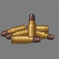, you'll shoot every 6 seconds. Each shot uses one ammo and one rifle durability. When durability reaches zero, the rifle breaks. Your shooting range is normally 10 units but can extend to 15 if you have height advantage over your target. Ammo stacks up to 20 per slot - when transferring from storage, it automatically fills existing stacks first. . You can also build worker structures nearby and sell them to proprietors. When you sell a structure like a woodcutter or miner to a proprietor, you receive 10 coins and a worker NPC spawns to gather resources and sell them to your market automatically. Once sold, the structure stops decaying but you lose access to its inventory.
. You can also build worker structures nearby and sell them to proprietors. When you sell a structure like a woodcutter or miner to a proprietor, you receive 10 coins and a worker NPC spawns to gather resources and sell them to your market automatically. Once sold, the structure stops decaying but you lose access to its inventory. Miner - Searches for rocks within 50 units and mines them 5 times per rock. Delivers raw stone to your market - limestone, sandstone, clay, or iron depending on what's nearby.
Miner - Searches for rocks within 50 units and mines them 5 times per rock. Delivers raw stone to your market - limestone, sandstone, clay, or iron depending on what's nearby. Baker - Collects apples from nearby gardens, brings them to the bakery, and bakes them into apple tarts. Apple tarts sell well and provide 30 minutes of food each.
Baker - Collects apples from nearby gardens, brings them to the bakery, and bakes them into apple tarts. Apple tarts sell well and provide 30 minutes of food each. Fisherman - Walks to nearby water, catches 8 fish, returns to cook them with firewood, and sells cooked fish to your market. Cooked fish provides 60 minutes of food.
Fisherman - Walks to nearby water, catches 8 fish, returns to cook them with firewood, and sells cooked fish to your market. Cooked fish provides 60 minutes of food. Ironworker - Collects iron ore and firewood from your market, smelts the iron into ingots at the ironworks, and sells the ingots. Iron can only be smelted at an ironworks, not a campfire.
Ironworker - Collects iron ore and firewood from your market, smelts the iron into ingots at the ironworks, and sells the ingots. Iron can only be smelted at an ironworks, not a campfire. Sailboat - Faster at 1.5 units per second. Requires water at least 0.3 units deep, so you'll need to find a slightly deeper spot to board. Turns slower - 16 seconds for full rotation. Build cost: 1 plank.
Sailboat - Faster at 1.5 units per second. Requires water at least 0.3 units deep, so you'll need to find a slightly deeper spot to board. Turns slower - 16 seconds for full rotation. Build cost: 1 plank.